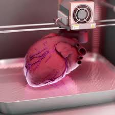
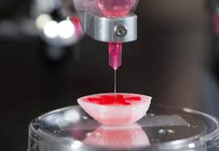

LifeInfinitiEra: Revolucionando la Bioingeniería
En InfinitiNanotech, nuestro proyecto estrella, LifeInfinitiEra, representa un avance significativo en la creación de órganos artificiales utilizando nanotecnología avanzada. Este proyecto tiene el potencial de cambiar el futuro de la medicina y salvar innumerables vidas.
La Importancia del Proyecto
El trasplante de órganos es una necesidad crítica en la medicina moderna. Cada año, miles de pacientes esperan en listas de trasplante, enfrentando incertidumbre y, en muchos casos, la muerte debido a la escasez de donantes de órganos. LifeInfinitiEra busca abordar esta crisis mediante la creación de órganos artificiales que son biocompatibles y funcionalmente equivalentes a los órganos humanos naturales.
Tecnología Utilizada
Nuestro enfoque combina bioingeniería avanzada y nanotecnología para construir tejidos y órganos a nivel celular. Utilizamos impresoras 3D de biotecnología para fabricar estructuras celulares complejas, y nanopartículas para mejorar la integración y el funcionamiento de estos órganos en el cuerpo humano. Esta tecnología nos permite crear órganos que no solo son estructuralmente similares a los naturales, sino que también funcionan de manera efectiva una vez implantados.
El Proceso de Desarrollo
El desarrollo de LifeInfinitiEra involucra varias etapas clave:
- Investigación y Desarrollo: Utilizamos la investigación de vanguardia para entender mejor la estructura y la función de los órganos humanos.
- Ingeniería de Tejidos: Aplicamos principios de bioingeniería para diseñar y construir tejidos a partir de células madre y biomateriales.
- Nanotecnología: Empleamos nanopartículas para mejorar la biocompatibilidad y la integración de los órganos artificiales en el cuerpo.
- Pruebas y Validación: Realizamos pruebas exhaustivas en modelos animales y clínicos para asegurar la eficacia y la seguridad de los órganos.
El Equipo Detrás de LifeInfinitiEra
LifeInfinitiEra es el resultado de la colaboración entre expertos en bioingeniería, nanotecnología y medicina regenerativa. Nuestro equipo está compuesto por científicos, ingenieros y médicos que trabajan juntos para hacer realidad esta innovadora solución.
Logros y Reconocimientos
Desde su inicio, LifeInfinitiEra ha sido reconocido por su innovación y su impacto potencial en la medicina. Hemos recibido numerosos premios, incluyendo el prestigioso Premio de Innovación en Biotecnología. Además, nuestros avances han sido publicados en revistas científicas de renombre, y hemos presentado nuestros hallazgos en conferencias internacionales.
Impacto Futuro
Creemos que LifeInfinitiEra no solo transformará el campo de los trasplantes de órganos, sino que también abrirá nuevas posibilidades en la medicina regenerativa y la bioingeniería. Con el tiempo, esperamos que nuestra tecnología permita la creación de una amplia gama de tejidos y órganos, mejorando la calidad de vida de millones de personas en todo el mundo.
Únete a Nosotros
Estamos siempre en busca de nuevos talentos y colaboradores que compartan nuestra visión y pasión por la innovación. Si estás interesado en unirte a nuestro equipo o colaborar en este emocionante proyecto, no dudes en contactarnos.